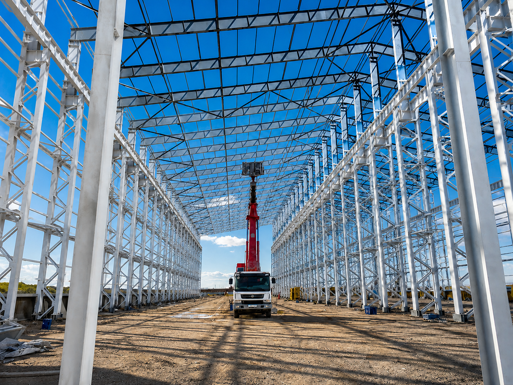

Виды и способы огнезащиты металлоконструкций
Сравниваем огнезащитные краски, штукатурки, плиты и комбинированные системы: как выбрать решение по пределу огнестойкости, профилю и условиям объекта.
Сравниваем огнезащитные краски, штукатурки, плиты и комбинированные системы: как выбрать решение по пределу огнестойкости, профилю и условиям объекта.

Сталь не горит, но в огне быстро нагревается. Из-за этого балки могут прогнуться, колонны — потерять устойчивость, а соединения — разрушиться. Огнезащита даёт конструкции время выдержать пожар и людям — время безопасно покинуть здание.
Для металлоконструкций используют огнезащитные краски, штукатурные и напыляемые составы, плиты и комбинированные системы. У каждого решения своя задача: где-то важно оставить металл открытым, а где-то — получить надёжную толстую оболочку.
В этой статье говорим о несущих стальных конструкциях: колоннах, балках, фермах, связях и элементах перекрытий. Для других металлов систему подбирают отдельно.
Если коротко: для открытого каркаса в интерьере часто подходит вспучивающаяся краска. Когда нужна более серьёзная защита, рассматривают штукатурку, плиты или комбинацию материалов. Но выбирать только по внешнему виду или цене нельзя — сначала нужно рассчитать конкретные профили.
Дальше разберём, чем отличаются эти решения, какие параметры действительно важны и как не ошибиться при выборе.
Для несущих стальных элементов главный показатель — R: время, в течение которого конструкция сохраняет несущую способность. Например, R60 означает, что она должна выдерживать расчётное огневое воздействие не меньше 60 минут.
Для стен и других ограждающих конструкций встречаются также E — целостность, I — теплоизоляция и REI — сочетание этих показателей.
Требование задают не одной цифрой на всё здание, а для каждого типа конструкций. У колонн, перекрытий и элементов покрытия оно может отличаться. Именно поэтому нельзя подобрать защиту «на глаз» для всех элементов сразу.
Надпись «R60» на банке или в коммерческом предложении сама по себе ничего не гарантирует. Один и тот же материал по-разному работает на тонкой балке и массивной колонне. Важны профиль, стороны нагрева, толщина сухого слоя, грунт, финишное покрытие и условия эксплуатации.
У материала есть своя группа огнезащитной эффективности по ГОСТ Р 53295-2009. Но это не готовый предел огнестойкости любой конструкции. Подходит ли система конкретной балке или колонне, подтверждают расчётом и проектом.
Это огнезащитные краски, которые наносят прямо на подготовленный металл. При сильном нагреве покрытие вспучивается и превращается в пористый слой: он замедляет прогрев стали.
Такой вариант удобен для открытых колонн и балок, сложных профилей и интерьеров, где важен внешний вид. Толщина слоя небольшая, поэтому конструкция почти не меняется визуально и не получает заметной дополнительной нагрузки.
Но краска работает только как часть системы: нужны правильно подготовленный металл, совместимый грунт, нужная толщина каждого слоя и, если того требуют условия, защитное финишное покрытие. Экономить на подготовке или самовольно менять материалы нельзя.
Если профиль тонкий, конструкция может получать удары или проект требует конструктивную защиту, одной краски может быть недостаточно. Тогда рассматривают следующие варианты.
Штукатурка и напыляемые составы создают вокруг металла толстый теплоизоляционный слой. Они не обязаны вспучиваться: металл защищает сама толщина и низкая теплопроводность покрытия.
Это практичный вариант для складов, производств и технических помещений, где ровная декоративная поверхность не нужна. Такие системы подходят для колонн, балок и ферм, когда нужен более серьёзный защитный барьер.
Здесь тоже важна технология: основание должно быть подготовлено, слой — набран до нужной толщины и хорошо высушен. Трещины, отслоения и непрокрытые места возле соединений снижают защиту.
Плиты и листовые материалы закрывают конструкцию защитной оболочкой — чаще всего коробом. Это сухой монтаж без нанесения мокрых составов.
Плитный вариант выбирают, когда нужна ровная поверхность, одинаковая толщина защиты или дополнительная стойкость к случайным ударам. Иногда одним коробом закрывают сразу несколько элементов.
Важно помнить: защита зависит не только от плиты. Критичны количество слоёв, стыки, каркас, крепёж, углы и примыкания. Если изменить эти узлы на объекте, испытанная система перестанет соответствовать проекту.
Маты и рулонные материалы закрепляют вокруг профиля по схеме производителя. Они могут быть самостоятельной защитой или частью многослойной системы.
Ключевое условие — плотное прилегание без разрывов и открытых участков. Также проверяют нахлёсты, крепления, защиту от влаги и повреждений.
Обычный теплоизоляционный мат нельзя автоматически считать огнезащитой. Материал, крепёж и способ монтажа должны быть испытаны именно вместе.
Иногда одного способа недостаточно. Тогда используют комбинацию: например, краску вместе с плитной оболочкой. Это помогает выполнить требования по огнестойкости, толщине, весу или сложным узлам.
Комбинированная защита — не набор материалов на усмотрение монтажника. Состав слоёв, их толщина и порядок работ должны быть подтверждены документацией и испытаниями.
| Вид огнезащиты | Как работает | Когда уместен | Основные ограничения |
|---|---|---|---|
| Вспучивающаяся краска | При нагреве образует пористый теплоизоляционный слой | Открытый металл, сложные профили, требования к внешнему виду и небольшой массе | Требовательность к подготовке, толщине, грунту, влажности и защите от повреждений |
| Толстослойный напыляемый состав | Замедляет нагрев за счёт массивного теплоизоляционного покрытия | Промышленные и технические помещения без высоких требований к отделке | Дополнительная масса, мокрый процесс, фактурная поверхность, контроль адгезии |
| Огнезащитная штукатурка | Формирует толстую негорючую оболочку | Колонны, балки и элементы, для которых допустим объёмный защитный слой | Толщина, масса, вероятность трещин при нарушении технологии |
| Плиты и листовые материалы | Закрывают профиль защитной оболочкой или коробом | Сухой монтаж, ровная поверхность, высокая повторяемость толщины | Увеличение габаритов, сложные узлы, требования к стыкам и креплениям |
| Маты и рулонные материалы | Изолируют нагреваемую поверхность волокнистым слоем | Сложные профили и системы, для которых существует испытанное решение | Чувствительность к качеству крепления, разрывам, влаге и повреждениям |
| Комбинированная система | Объединяет несколько способов | Нестандартные конструкции и комплексные требования | Нельзя самостоятельно менять состав и последовательность слоёв |
Таблица помогает сузить выбор, но не заменяет расчёт. Окончательное решение принимают по проекту и документам на конкретную систему.
Важен не только материал, но и способ его разместить. При нанесении по контуру защита повторяет форму двутавра, трубы или швеллера. Так обычно работают краски, штукатурки и некоторые матовые системы.
Другой вариант — короб: вокруг элемента собирают защитную оболочку. Так чаще монтируют плиты и листовые материалы. Короб даёт ровные поверхности, но делает конструкцию габаритнее.
Менять схему ради экономии нельзя. При этом меняются площадь нагрева, расход материала и работа всей системы при пожаре.
Один и тот же состав не будет одинаково работать на массивной колонне и тонком профиле. Поэтому считают приведённую толщину металла: δпр = A / P, где A — площадь сечения металла, а P — периметр поверхности, которую нагревает огонь.
Это не толщина стенки профиля. Показатель показывает, сколько металла приходится на нагреваемую поверхность. Чем он меньше, тем быстрее конструкция нагревается и тем больше ей нужна защита.
Важно, с каких сторон к элементу может подойти огонь. У балки под перекрытием и отдельно стоящей колонны одного профиля условия будут разными. Поэтому нельзя просто повторить толщину покрытия с соседней конструкции.
Для несущих стальных конструкций зданий I и II степеней огнестойкости СП 2.13130.2020 устанавливает важное правило: если приведённая толщина меньше 5,8 мм, нужна конструктивная или комбинированная огнезащита.
Это не означает, что краска запрещена для любого тонкого профиля. Правило действует для определённых зданий и конструкций, а 5,8 мм — именно расчётная приведённая, а не реальная толщина стенки. Решение фиксируют в проекте.
Сначала определяют, сколько минут должна выдержать каждая группа элементов: R15, R30, R45, R60, R90, R120 или другое значение. Степени огнестойкости здания недостаточно — смотрят требования именно к колоннам, балкам, фермам и перекрытиям.
Нужны марки и размеры профилей, площадь или длина конструкций, схема нагрева, узлы, существующий грунт и требуемый R. Если подрядчик сразу называет точную толщину и цену, не запросив эти данные, это не полноценный расчёт, а ориентир.
Профили со схожими параметрами можно объединить в группы. Но для каждой группы отдельно учитывают сечение и схему нагрева.
Проверяют, подтверждены ли для выбранной системы нужное время защиты, приведённая толщина, толщина покрытия, способ монтажа, грунт и условия работы. Нельзя просто пропорционально «дотянуть» результат за пределы испытаний.
В конце смотрят на реальный объект: улица или помещение, влажность, конденсат, перепады температур, химическая среда, вибрация и удары. Также важно, можно ли потом осматривать и ремонтировать покрытие.
Ниже — не готовые рецепты, а удобный ориентир для первого выбора. Затем решение всё равно проверяют расчётом.
| Условия объекта | Что рассматривают в первую очередь | Что проверить |
|---|---|---|
| Открытые балки и колонны в интерьере | Вспучивающееся покрытие | Допустимый R, приведённую толщину, качество поверхности и финишный цвет |
| Здание I или II степени, приведённая толщина менее 5,8 мм | Конструктивную или комбинированную огнезащиту | Требования СП, испытанную конфигурацию и расчёт профилей |
| Техническое помещение без требований к гладкой отделке | Штукатурную или толстослойную напыляемую систему | Массу, адгезию, влажность, толщину и возможность ремонта |
| Нужна ровная закрытая поверхность | Плитную облицовку | Стыки, крепления, каркас, примыкания и доступ к скрытому металлу |
| Наружные конструкции | Систему с подтверждёнными наружными условиями эксплуатации | Влагостойкость, температурный диапазон, грунт и защитное покрытие |
| Конструкция подвержена ударам | Плитную либо специально защищённую комбинированную систему | Механическую стойкость и возможность локального восстановления |
| Сложные узлы и большое количество соединений | Наносимое по контуру или комбинированное решение | Полноту покрытия, доступ к сварным швам, болтам и примыканиям |
Иногда — да, но только если это подтверждает проект. Для конструкций с требованием R15, кроме элементов противопожарных преград, СП допускает не применять защиту, когда незащищённый элемент имеет фактический предел не меньше R8 и приведённую толщину металла не менее 4 мм.
Это не повод автоматически оставлять без обработки любую балку с R15. Проверяют её нагрузку, профиль, схему нагрева и роль в здании.
Сравнивать варианты только по цене килограмма материала неправильно. Один состав наносят тонким слоем, для другого нужны каркас, крепёж или защитная отделка.
В смету обычно входят обследование и расчёт, проект, очистка металла, грунт, сама защита, финишный слой, подъёмники или леса, контроль толщины и исполнительная документация.
Больше всего на цену влияют требуемый R, приведённая толщина профилей и площадь нагреваемой поверхности. Поэтому две конструкции одинакового веса могут стоить по-разному. Для честного сравнения запрашивайте стоимость готовой системы на объекте, а не только цену материала или работ за квадратный метр.
Одного лучшего материала нет. Краска хороша, если важны небольшой слой, внешний вид и сложный профиль. Плиты — когда допустим короб и нужна массивная защита. В каждом случае смотрят на требуемый R, профиль, условия эксплуатации и документы на систему.
Можно, если покрытие испытано для нужного времени и конкретного диапазона приведённых толщин, а слой нанесён в расчётной толщине. Одной надписи «до 60 минут» для этого недостаточно.
Обычная краска украшает поверхность или защищает её от коррозии. Огнезащитная при нагреве образует теплоизоляционный слой и замедляет прогрев металла. Ей тоже нужен совместимый грунт, а иногда и финишный слой.
Это соотношение количества металла и площади, через которую он нагревается. Массивная колонна обычно прогревается медленнее тонкого профиля с большой открытой поверхностью. Поэтому при одинаковом R им может потребоваться разная толщина защиты.
Только если известен тип старой краски и подтверждена совместимость. Если покрытие неизвестно, отслаивается или не подходит системе, его удаляют либо принимают отдельное техническое решение. Иначе новый слой может отойти вместе со старым.
Не всегда. Всё зависит от условий и инструкции производителя. На улице, во влажных или агрессивных помещениях финишный слой часто нужен, но использовать можно только совместимый материал.
Периодичность задают документы на систему, проект и регламент объекта. Дополнительно покрытие осматривают после протечек, ударов, ремонта рядом или воздействия химических веществ. Повреждения восстанавливают материалом из той же системы.
Нет. Одинаковое заявленное время защиты не делает материалы взаимозаменяемыми. У них разные допустимые профили, грунты, толщины и условия. Для замены нужно скорректировать проект и снова проверить расчёт.
У подрядчика должна быть лицензия МЧС на работы по огнезащите материалов, изделий и конструкций. Лицензия не заменяет проект, но подтверждает право выполнять такие работы.
Выбирать огнезащиту стоит не по популярности материала и не по цене банки. Надёжный порядок такой:
требуемый предел огнестойкости → характеристики профиля → приведённая толщина → условия эксплуатации → испытанная система → проект → контроль выполнения.
Краска помогает сохранить вид открытого металла. Штукатурные и напыляемые составы создают толстый защитный слой. Плиты дают сухой монтаж и стабильную оболочку. Комбинацию материалов выбирают, когда одного решения недостаточно.
Чтобы получить обоснованный расчёт, передайте подрядчику чертежи, марки профилей, требуемый R, схему нагрева, сведения о грунте и условиях эксплуатации. Без этих данных можно назвать только ориентировочный бюджет.
Нужен расчёт или выполнение работ? Подробнее — на странице услуги огнезащита металлоконструкций.